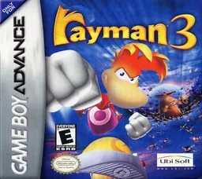
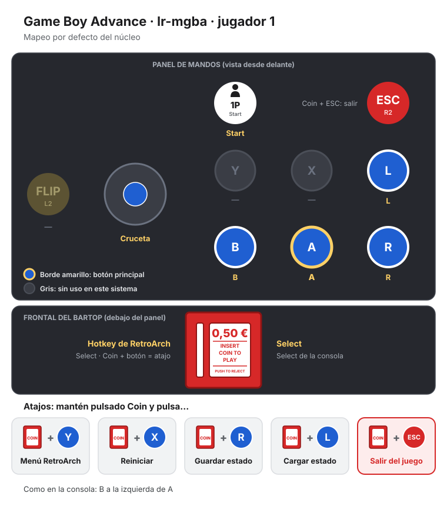
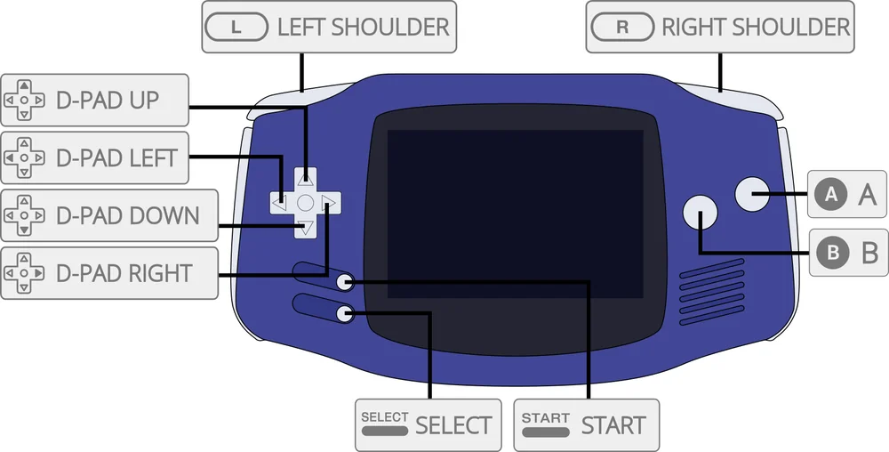

Game Boy Advance
Rayman 3: Hoodlum Havoc
- Año: 2003
- Género: Plataformas
- Jugadores: 1 jugador
Versión para Game Boy Advance de Rayman 3, en forma de plataformas en 2D. André, un lum negro, quiere dominar el mundo con su ejército de Hoodlums, y Rayman tiene que pararle. Por el camino, su amigo Globox se traga a André sin querer y hay que encontrar una cura.
Controles
Qué botones saltan y dan el puñetazo (⚠️ no he encontrado los controles). ¿Va fluido?
Game Boy Advance: A y B abajo, gatillos L y R a la derecha.
| Panel | Juego |
|---|---|
 | B |
 | A |
 | R |
 | L |
 | Start |
 | Select |
+  | Salir del juego |
El panel en Game Boy Advance




Argumento
Recopilado de internet (2026-11-04). Lo marcado con ⚠️ no está probado en la bartop.
André, un lum negro nacido del mal puro, convierte a los lums rojos en negros y forma un ejército de Hoodlums, vestidos como espantapájaros. Murfy, del Consejo de las Hadas, los descubre y huye hasta el claro donde duermen Rayman y Globox. En la huida, Globox le quita sin querer las manos a Rayman y escapa con ellas; más tarde se traga a André sin querer, y Rayman tiene que buscarle una cura y parar a los Hoodlums.
Final: ⚠️ esta versión de GBA es un juego distinto, de plataformas en 2D; no he encontrado su final. Se ve al final del vídeo.
Fuentes
Jugabilidad
Recopilado de internet (2026-11-04). Lo marcado con ⚠️ no está probado en la bartop.
- Plataformas en 2D para Game Boy Advance (2003), versión aparte de Rayman 3; la crítica le dio mejores notas que a las de consola (83 sobre 100 en Metacritic).
- Jefes al final de cada zona y retos extra (Mega Havoc, retos de puñetazo de Ly y de lums), según los capítulos del vídeo.
Botones según las guías (⚠️ por confirmar)
- ⚠️ No he encontrado los controles.
Fuentes
Guía de niveles
Recopilado de internet (2026-11-04). Lo marcado con ⚠️ no está probado en la bartop.
| Tramo | Niveles (los jefes en negrita) |
|---|---|
| Partida | Wanderwood Forest · Shining Glade · Swamp of Begoniax · Garish Gears · Hoodlum Hideout · Magma Mayhem · Vertigo Wastes · Void of Bones · Jano's Nest · Prickly Passage · Swamp of Begoniax 2 · River of Fire · The Underlands · Boulder Brink · Den of Rocky · Wretched Ruins · Wicked Flow · Creeping Chaos · Scaleman's Keep · The Mettleworks · Magma Mayhem 2 · Razor Slide · Heart of the Ancients |
- En el vídeo se vuelve después a varios niveles y hay retos extra (Mega Havoc 1 a 4, el reto de los lums): esas vueltas solo salen en «Vídeos».
- Nombres: los de los capítulos del vídeo.
Fuentes
Objetos
Recopilado de internet (2026-11-04). Lo marcado con ⚠️ no está probado en la bartop.
- ⚠️ No he encontrado la lista de objetos de esta versión.
Fuentes
Trucos y secretos
Recopilado de internet (2026-11-04). Lo marcado con ⚠️ no está probado en la bartop.
Secretos
- Retos extra: Mega Havoc (cuatro), el reto de puñetazo de Ly y el de los lums.
Fuentes
Longplay

Partida completa de la versión Game Boy Advance (172 min), de Project Longplay: Rayman 3 - Longplay , GBA.
Pulsa el minuto de un nivel para ver el vídeo desde ese punto.
Niveles
| Tramo | Niveles |
|---|---|
| Partida | Wanderwood Forest ▶ 2:13Shining Glade ▶ 7:23Swamp of Begoniax ▶ 13:36Garish Gears ▶ 17:08Hoodlum Hideout ▶ 19:23Magma Mayhem ▶ 26:18Vertigo Wastes ▶ 29:11Void of Bones ▶ 37:40Jano's Nest ▶ 49:25Prickly Passage ▶ 51:56Swamp of Begoniax 2 ▶ 57:05River of Fire ▶ 1:03:45The Underlands ▶ 1:14:37Boulder Brink ▶ 1:29:25Den of Rocky ▶ 1:34:10Wretched Ruins ▶ 1:36:06Wicked Flow ▶ 1:43:07Creeping Chaos ▶ 1:53:12Scaleman's Keep ▶ 1:58:26The Mettleworks ▶ 2:01:43Magma Mayhem 2 ▶ 2:10:08Razor Slide ▶ 2:16:56Heart of the Ancients ▶ 2:46:44 |
| Retos extra | |
| Otros momentos |